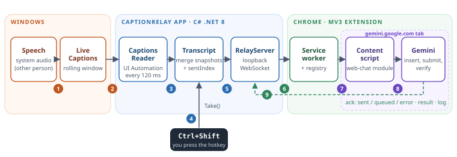
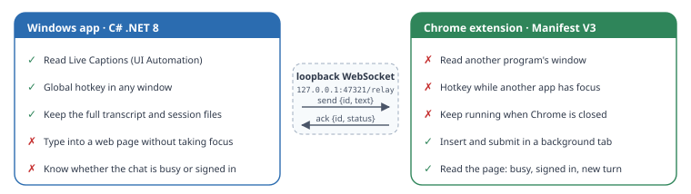

سیستم از دو برنامه تشکیل شده که با هم حرف میزنند: یک اپ ویندوزی که صدا را (از طریق Live Captions) به متن
و متن را به «پیام آمادهی ارسال» تبدیل میکند، و یک افزونهی Chrome که آن پیام را داخل صفحهی چت میگذارد و
ارسال میکند. پل بین این دو یک WebSocket محلی است.

شکل ۲-۱ — خط لولهی کامل. شمارهها ترتیب اتفاقها را در یک ارسال نشان میدهند.
نُه قدم یک ارسال The nine steps
طرف مقابل حرف میزند؛ صدای سیستم پخش میشود.
برنامهی Live Captions آن را به متن تبدیل و در پنجرهی خودش نشان میدهد (پنجرهای غلتان که مدام اصلاح میشود).
اپ هر 120 ms متن آن پنجره را با UI Automation میخواند و در یک رونوشت واحد و رو به رشد ادغام میکند.
کاربر Ctrl+Shift را میزند؛ اپ «هر چه از آخرین ارسال اضافه شده» را از رونوشت برمیدارد (Take).
آن متن با یک شناسهی یکتا به سرور WebSocket داخل اپ داده میشود.
پیام send از طریق WebSocket به service worker افزونه میرسد.
افزونه از روی provider فعال تصمیم میگیرد متن کجا برود و به content script تب Gemini میدهد.
اسکریپت داخل صفحه (content script) متن را در جعبهی ورودی میگذارد، دکمهی ارسال را میزند و بررسی میکند که واقعاً ارسال شد.
نتیجه (ack) برمیگردد؛ اپ ارسال را قطعی میکند یا متن را برای دفعهی بعد نگه میدارد.
چرا دو برنامه؟ Why two programs
هیچکدام از دو محیط بهتنهایی همهی تواناییهای لازم را ندارد. فقط یک برنامهی دسکتاپ میتواند پنجرهی برنامهی دیگری
را بخواند و کلید سراسری بگیرد؛ و فقط کدی که داخل صفحه اجرا میشود میتواند بدون جلو آوردن پنجره در آن تایپ کند.

شکل ۲-۲ — تواناییهای هر طرف؛ هر کار به جایی سپرده شده که آن را بهتر انجام میدهد.
گزینههایی که بررسی و رد شدند
شبیهسازی کیبورد یا کلیپبورد (یعنی SendKeys یا Ctrl+V در Chrome) — باید پنجرهی Chrome جلو بیاید؛ قانون «فوکوس جابهجا نشود» را میشکند و clipboard کاربر را هم خراب میکند.
استفاده از Gemini API — کلید API و هزینه لازم دارد، و کاربر Gemها، تاریخچه و رابط چت خودش را از دست میدهد. (برای آینده بهعنوان یک provider دیگر در نظر گرفته شده.)
کنترل مرورگر با Chrome DevTools Protocol — مرورگر Chrome باید با پرچم remote-debugging اجرا شود؛ یعنی هر برنامهی محلی میتواند مرورگر را کنترل کند. خطر امنیتی بزرگ.
ارتباط از راه Native Messaging — مرورگر Chrome خودش پروسهی میزبان را اجرا و عمرش را کنترل میکند، در حالی که اپ باید مستقل و همیشه در حال ضبط باشد؛ نصبش هم ثبت رجیستری برای هر مرورگر لازم دارد. WebSocket سادهتر است و با یک کلاینت جعلی تست میشود.
چرا اپ سرور است و افزونه کلاینت؟
افزونهی Manifest V3 نمیتواند روی پورت گوش بدهد، ولی service worker آن میتواند به یک WebSocket وصل شود. اپ هم
همیشه در حال اجراست، در حالی که Chrome ممکن است بسته و باز شود. پس طبیعی است که طرفِ پایدار (اپ) منتظر بماند و
طرفِ گذرا (افزونه) هر بار که بیدار شد وصل شود.
IN AN INTERVIEW
The system is split along capability lines. The desktop app owns everything that needs the OS: reading Live
Captions through UI Automation, the global hotkey, the transcript and the files. The browser extension owns
everything that needs the page: inserting and submitting text in a background tab without focus. They talk over a
loopback WebSocket where the always-running app is the server and the extension's service worker is the client.
Interview questions
Why not simulate keystrokes into Chrome?
Keystrokes go to the focused window, so Chrome would have to come to the front. That breaks the main
requirement and also clobbers the clipboard.
Why WebSocket instead of Native Messaging?
With Native Messaging the browser launches and owns the host process; our app must run independently and keep
capturing. A loopback WebSocket keeps both lifetimes independent and is trivial to test with a fake client.
Where does the system cross a trust boundary?
At the WebSocket: anything on the machine, including web pages, could try to connect. That boundary gets
loopback binding, an Origin check and a token (chapter 9).